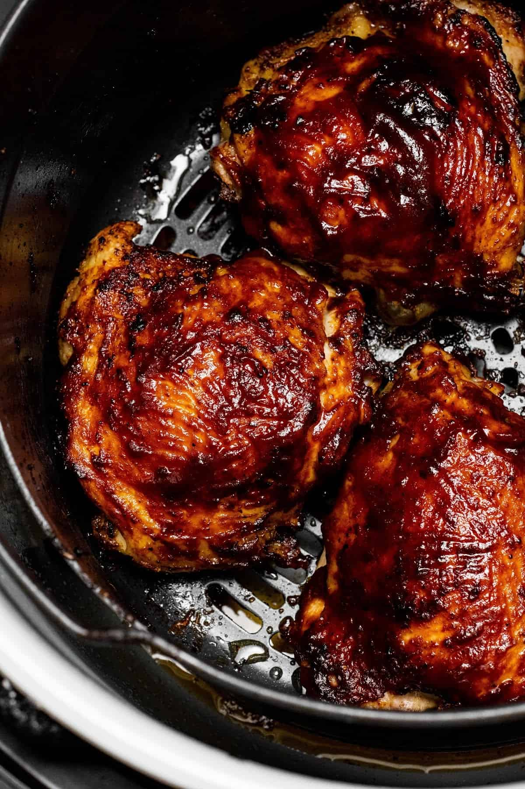

Air Fried BBQ Chicken Thighs

The perfect barbecue chicken from inside your apartment or home.
If you live in an apartment with no space for barbecuing, these air fried barbecue chicken thighs are the perfect substitute.
Ingredients
- 4 chicken thighs
- Choice of BBQ sauce
- 1 tsp salt or to taste
- 1/4 tsp ground black pepper or to taste
- 1 tsp granulated garlic or to taste
- 1/2 tsp onion powder or to taste
- 1/4 tsp cayenne powder or to taste
- 1/2 tsp ground paprika or to taste
- 1/4 tsp ground oregano or to taste
Steps
- Preheat you air fryer to 375 degrees F
- Pat your chickens dry and then rub your chicken with your spices evenly.
- Allow your chicken to come close to room temperature(usually 30 minutes) so that it can cook more evenly and nicely.
- Spray the inside of the air fryer with oil.
- Place the chicken in the air fryer skin side up and cook for 20 minutes or a little longer for a crispier skin.
- Remove thighs from air fryer and into a bowl and toss into the bbq sauce until evenly coated.
- Return back to the air fryer and cook for another 5-7 minutes at 375 degrees F.
- Serve hot with your choice of sides such as mashed potatoes, rice, mac n cheese, and broccoli.